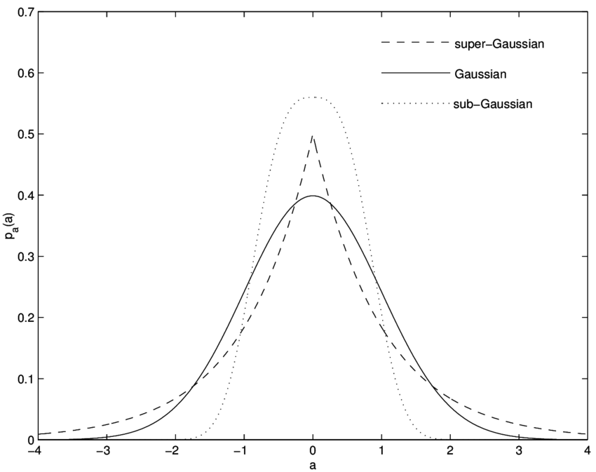

Independent component analysis
Introduction
In the Independent Component Analysis (ICA), we observe $n$ scalar random variables $x_1,x_2,x_3,.....,x_n$, which are assumed to be a linear combination of $m (m\leq n)$ independent components (IC's) $s_1,s_2,s_3,.....,s_m$. The IC's are mutually statistically independent (i.e. one variable does not give any information about the other variables), and zero mean.
In a matrix form, we can write this relationship as follows:
\begin{equation}
\mathbf{x}=A\mathbf{s}
\label{eq_ica}
\end{equation}
Where $\mathbf{x}$ is the $n$-dimensional observed signal vector, $\mathbf{s}$ contains the independent components, and $A$ is called the mixing matrix.
\begin{align}
\begin{bmatrix}
x_{1} \\
x_{2} \\
\vdots \\
x_{n}
\end{bmatrix}= \begin{bmatrix}
a_{11}&a_{12}&\cdots &a_{1n} \\
a_{21}&a_{22}&\cdots &a_{2n} \\
\vdots & \vdots & \ddots & \vdots\\
a_{n1}&a_{n2}&\cdots &a_{nn}
\end{bmatrix}
\begin{bmatrix}s_{1} \\ s_{2} \\\vdots\\s_{n}\end{bmatrix}
\end{align}
For the mathematical convenience, we have assumed that the independent components have unit variance.
Prewhitening/Sphering
This is a preprocessting step to speed up the ICA algorithm. First we do the centering
of the data by subtracting the mean. Then the observed vector $\mathbf{x}$ is linearly
transformed to a vector $\mathbf{\tilde{x}}$, which is white. This means that the transformed data
is uncorrelated with its variance equals to unity. The preprocessing step is called whitening or sphering. Mathematically, we can write it as:
$$E[\mathbf{\tilde{x}}\mathbf{\tilde{x}}^T]=I$$
Whitening can be done by the eigenvalue decomposition of the covariance matrix of $\mathbf{x}$, $E[\mathbf{xx^T}]=EDE^T$ ,
where $E$ is the orthogonal matrix of the eigenvectors of $E[\mathbf{xx^T}]$ and $D$ is the diagonal matrix of its eigenvalues.
The whitened data can be obtained by:
\begin{equation}
\mathbf{\tilde{x}}=ED^{-1/2}E^T\mathbf{x}
\label{eq_whitening}
\end{equation}
-
Formulation of the problem
Let, $ED^{-1/2}E^T=M$, then Equation $\mathbf{\tilde{x}}=ED^{-1/2}E^T\mathbf{x}$ can be re-written as: $$\mathbf{\tilde{x}}=M\mathbf{x}$$
Using Equation \ref{eq_ica}, we can write the above equation as:
$$\mathbf{\tilde{x}}=MA\mathbf{s}$$ Let, $MA=\tilde{A}$, then we can re-write $\mathbf{\tilde{x}}$ as:
\begin{equation}
\boxed{\mathbf{\tilde{x}}=\tilde{A}\mathbf{s}}
\label{eq_ica_2}
\end{equation}
We can define $\tilde{A}$ as a new transformed mixing matrix. $\tilde{A}$ is an orthogonal matrix, because the independent components have unit variance, i.e., $E[\mathbf{ss^T}]=I$. It can be shown that $\tilde{A}$ is an orthogonal matrix as follows:
\begin{align*}
E[\mathbf{\tilde{x}\tilde{x}^T}] = I\\
E[\tilde{A}\mathbf{ss^T}\tilde{A}^T]=I\\
\tilde{A}E[\mathbf{ss^T}]\tilde{A}^T=I\\
\tilde{A}\tilde{A}^T=I
\end{align*}
-
Maximization of non-gaussianity
The Central Limit Theorem (CLT) tells us, if we add two or more independent random variables, then the sum will likely be the normal distribution. In contrast, the maximization of non-gaussianity of $\mathbf{s}=W^T\mathbf{x}$ will give the independent component.
Kurtosis and Neg-entropy are the two widely used measures of the non-gaussianity.
Approximation of the Neg-entropy and estimating one Independent Component
The new approximation of the Neg-entropy is given by:
$$
J(y) \propto [E\{G(y)\}-E\{G(v)\}]^2
$$Where $G$ is a non-quadratic function, $v$ is a gaussian variable of zero mean and unit variance, and $E\{.\}$
refers to the expected value. In \cite{hrid_4}, it is shown that this approximation is better than the cumulant based approximation,
because it is less sensitive to the outliers. \par
Consider a weight vector $\mathbf{w}$ and the linear combination of $\mathbf{x}$ is $\mathbf{w^Tx}.$
So, the approximation of the Neg-entropy equation can be written as:
\begin{equation}
J(\mathbf{w}^T\mathbf{x})=[E\{G(\mathbf{w}^T\mathbf{x})\}-E\{G(v)\}]^2
\label{non_quadratic}
\end{equation}
We maximize the Neg-entropy with the constraint $E[(\mathbf{w}^T\mathbf{x})^2]=||\mathbf{w}||^2=1$.\par
This optimization problem can be solved using the Lagrange multiplier method, which is a method of optimizing a
function subject to given constraint(s). According to the Lagrange multiplier method Equation \ref{non_quadratic} can be solved as follows:
\begin{align*}
L(\mathbf{w};\lambda) &= J(\mathbf{w}^T\mathbf{x})-\lambda(\mathbf{w}-1), \\
\frac{\partial L(\mathbf{w};\lambda) }{\partial \mathbf{w}}&=0,\\
E\{\mathbf{x}g(\mathbf{x}^T\mathbf{x})\}-\lambda \mathbf{w} &= 0. \\
\end{align*}
Where $\lambda$ is called the Lagrange coefficient and $g$ is the first derivative of the
non-quadratic function $G$. Let $E\{\mathbf{x}g(\mathbf{w}^T\mathbf{x})\}-\lambda \mathbf{w} = F(\mathbf{w})$,
then $F(\mathbf{w})=0$ can be solved easily using the Newton-Rapson method as follows:
\begin{equation*} \label{eq_11}
\begin{split}
\frac{\partial F(\mathbf{w}) }{\partial \mathbf{w}} & = E\{\mathbf{x}g'(\mathbf{w}^T\mathbf{x})\mathbf{x}^T\}-\lambda I, \\
& = E\{\mathbf{xx}^Tg'(\mathbf{w}^T\mathbf{x})\}-\lambda I,\\
since \, E[\mathbf{xx}^T]&=I,\\ \frac{\partial F(\mathbf{w}) }{\partial \mathbf{w}} & =E\{g'(\mathbf{w}^T\mathbf{x})\}I-\lambda I.
%\intertext{Which is a diagonal matrix.}
\end{split}
\end{equation*}
Which is a diagonal matrix.
Here $g$ and $g'$ are the first and second derivatives of the non-quadratic function $G$, respectively. Now the updated $\mathbf{w}^+$ can be
obtained using the Newton-Rapson method as follows:
\begin{align*}
\mathbf{w}^+ & = \mathbf{w}- \frac{E\{\mathbf{x}g(\mathbf{w}^T\mathbf{x})\}-\lambda \mathbf{w}}{E\{g'(\mathbf{w}^T\mathbf{x})\}-\lambda }
\end{align*}
Multiplying both sides by $[\lambda-E\{g'(\mathbf{w}^T\mathbf{x})\}$, we get:
\begin{align*}
\mathbf{w}^+ &= E\{\mathbf{x}g(\mathbf{w}^T\mathbf{x})\}-E\{g'(\mathbf{w}^T\mathbf{x})\}\mathbf{w}
\label{ica_main_function}
\end{align*}
Since we have multiplied by the scalar $[\lambda-E\{g'(\mathbf{w}^T\mathbf{x})\}$, we normalize $\mathbf{w}^+$ vector as follows:
$$\mathbf{w}^+=\frac{\mathbf{w}^+}{||\mathbf{w}^+||}.$$
To find the solution of the Equation
\begin{align*}
\mathbf{w}^+ &= E\{\mathbf{x}g(\mathbf{w}^T\mathbf{x})\}-E\{g'(\mathbf{w}^T\mathbf{x})\}\mathbf{w}
\label{ica_main_function2}
\end{align*}
we can use the Newton-Rapson method or the Fixed-Point algorithm.
We can re-write the Equation as:
\begin{equation}
\label{equation100}
\mathbf{w}^+ - E\{\mathbf{x}g(\mathbf{w}^T\mathbf{x})\}-E\{g'(\mathbf{w}^T\mathbf{x})\}\mathbf{w} =0
\end{equation}
Let us consider the left-hand side of the Equation \ref{equation100} is $f(\mathbf{w})$. So the Equation \ref{equation100} can be re-written as:
$$
f(\mathbf{w})=0
$$
$f(W)=0$ can be solved using the Newton-Rapson method. In that case, we need to find the inverse of the matrix $f(\mathbf{w})$ in each iteration, which is computationally expensive.
On the other hand, the Fixed-Point iterative algorithm does not need to calculate the inverse of the matrix, it updates the weight vector $\mathbf{w}$, until Equation \ref{condition} is satisfied.
\begin{equation}
\mathbf{w}^+=g(\mathbf{w})
\label{condition}
\end{equation}
Where, $$g(\mathbf{w})=E\{\mathbf{x}g(\mathbf{w}^T\mathbf{x})\}-E\{g'(\mathbf{w}^T\mathbf{x})\}\mathbf{w}$$
In essence, the Fixed-Point algorithm makes the ICA faster. This is why, the above Equation \ref{condition} is called as FastICA.

The goal of the ICA is to estimate the full rank mixing matrix $A$ and the independent components $\mathbf{s}$ from the observed original signal $\mathbf{x}$.
For simplicity of notation, we denote the preprocessed $\mathbf{\tilde{x}}$ as $\mathbf{x}$ and the new transformed mixing matrix as $A$ from now on, omitting the \textit{tildes}. Instead of estimating a full rank matrix, we estimate the orthogonal matrix $A$. We know that, the number of free parameters of an $n\times n$ orthogonal matrix is $\frac{n(n-1)}{2}$ . So, whitening solves half of the ICA problem. After estimating $A$, we compute the inverse of $A$ (say $W$, it is called unmixing matrix), then the independent components are obtained by: \begin{equation} \begin{aligned} \mathbf{s} &=(A^{-1})^T\mathbf{x}\\ \mathbf{s} &=W^T\mathbf{x} \end{aligned} \label{eq_ica_3} \end{equation} The goal of the ICA is to find the linear mapping $W$ such that the independent components are maximally statistically independent: $$\mathbf{s}=W^T\mathbf{x}$$ The columns of the unmixing matrix $W$ are the weight vectors, i.e., the direction of the independent components..
Kurtosis
Kurtosis is a measure of non-gaussianity. In other words, it is a descriptor of the shape of the tail of the probability distribution (see Figure). Kurtosis of a random variable $y$, is defined by: $$kurt(y)=E[y^4]-3(E[y^2])^2.$$ Kurtosis $(kurt(y))$ for a normal distribution is zero. If $kurt(y)>0$, then the shape of the distribution is super-gaussian (long tail) and if $ kurt(y) < 0$ , then the shape of the distribution is sub-gaussian (short tail).
Figure : Visualization of the Gaussian, Super-Gaussian, Sub-Gaussian distribution. The super-gaussian distribution has long tail shape, and the sub-gaussian distribution has short tail shape.